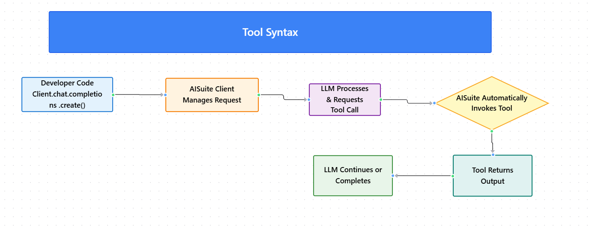

Module 3 — Episode 3
Training:Agentic AI Training
🎯 Learning Objectives
By the end of this episode, you will be able to:
- ✅ Understand how to define and expose tools for LLMs using the AI Suite library
- ✅ Implement tool-calling syntax similar to OpenAI’s function calling interface
- ✅ Explain how AI Suite automatically generates JSON schemas from function definitions
- ✅ Configure tool call parameters such as
max_turnsto manage iterative tool invocation loops
🧭 Overview
This episode introduces the syntax and mechanics of enabling an LLM to “call” tools in code using the AI Suite open-source library.
You’ll learn how AI Suite simplifies multi-provider tool integration by automatically generating the JSON schema that describes each tool to the LLM.
This concept is foundational for building agentic systems where LLMs can take structured actions—such as fetching data or executing code—based on user intent.
🧱 Prerequisites
Readers should already understand:
- Basic Python function definitions and docstrings
- The concept of tool use from the previous episode
- Familiarity with OpenAI’s Chat Completions API syntax
🔑 Core Concepts
- Tool Call Syntax – The structure used to let an LLM request external function execution.
- AI Suite Library – An open-source package that abstracts multi-provider LLM integrations and handles automatic tool schema generation.
- JSON Schema Generation – The process of describing a function (its name, parameters, and purpose) in a structured format that the LLM can understand.
- max_turns – A safeguard parameter that limits how many consecutive tool calls an LLM can request before the loop stops.
🖼 Visual Explanation
 Caption:This diagram illustrates how AISuite manages the full request–response–tool-call cycle, automatically handling schema generation and invocation without manual developer intervention.
⚙️ Technical Breakdown
How It Works
1. Define a ToolWrite a Python function such as get_current_time() with a clear docstring that describes its purpose and parameters.
Use the AISuite client to create a chat completion request:
response = client.chat.completions.create(
model="gpt-4o",
messages=messages,
tools=[get_current_time],
max_turns=5
)
AISuite inspects the function’s name, parameters, and docstring to automatically generate the JSON schema describing the tool.
4. LLM Request HandlingWhen the LLM requests a tool call, AISuite executes the corresponding function, captures its output, and feeds it back to the LLM.
5. Iteration ControlThe max_turns parameter prevents infinite loops by capping how many sequential tool calls can occur.
Why It Works
- Docstring Introspection: AISuite reads the function’s Python docstring to construct a meaningful description for the LLM.
- Schema Abstraction: Instead of manually defining JSON schemas, AISuite automates the process, reducing boilerplate and human error.
- Unified Interface: The syntax mirrors OpenAI’s API patterns, making it intuitive for developers already familiar with that ecosystem.
When To Use It
✅ Use when:
- You want your LLM to perform structured actions (e.g., query APIs, fetch data, compute results).
- You need to integrate multiple LLM providers without rewriting tool definitions.
- You prefer automatic schema generation over manual JSON construction.
❌ Avoid when:
- You require full manual control over schema definitions.
- You are using an LLM provider that doesn’t support tool/function calling.
Trade-offs & Limitations
- Automation vs. Control: Automatic schema generation is convenient but may limit fine-tuning of tool descriptions.
- Debugging Complexity: When multiple tools are chained, tracking the execution flow can become harder.
- Provider Compatibility: While AISuite supports multiple LLM providers, feature parity can vary.
Performance Considerations
- Minimal Overhead: Schema generation is lightweight and typically only happens once per tool definition.
- Network Latency: Each tool call involves a round trip between the LLM and the client.
- Loop Control: Proper
max_turnsconfiguration prevents runaway tool invocation loops.
💻 Code Examples
Minimal Example
from aisuite import AISuite
# Define a simple tool
def get_current_time():
"""Returns the current time in UTC."""
import datetime
return datetime.datetime.utcnow().isoformat()
# Initialize the client
client = AISuite()
# Messages for the LLM
messages = [{"role": "user", "content": "What time is it?"}]
# Let the LLM use the tool
response = client.chat.completions.create(
model="gpt-4o",
messages=messages,
tools=[get_current_time],
max_turns=5
)
print(response)
Example with Parameters
def get_current_time(timezone: str):
"""Returns the current time for a given timezone (e.g., 'America/New_York')."""
from datetime import datetime
import pytz
tz = pytz.timezone(timezone)
return datetime.now(tz).isoformat()
AISuite automatically generates a JSON schema describing this function—its name, description, and parameter (timezone)—and provides it to the LLM.
🧩 Next Steps
In the next episode, we’ll explore a special kind of tool—the code execution tool—which allows LLMs to write and run code dynamically.
This capability unlocks far more flexible and powerful agentic behaviors.